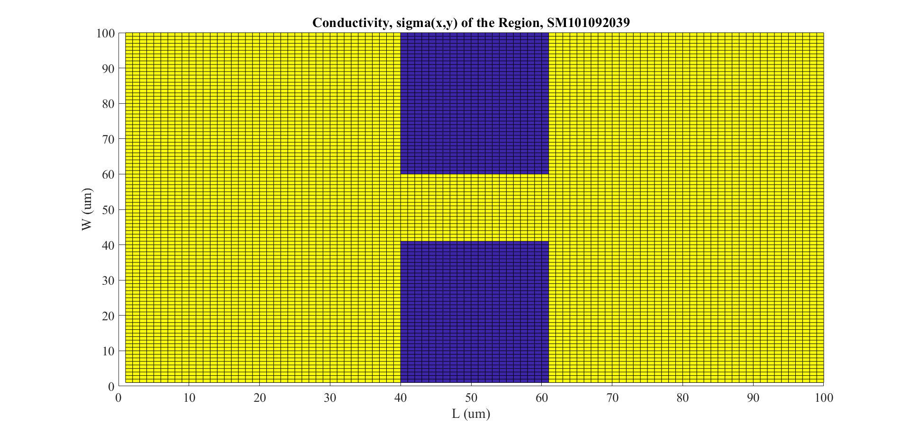
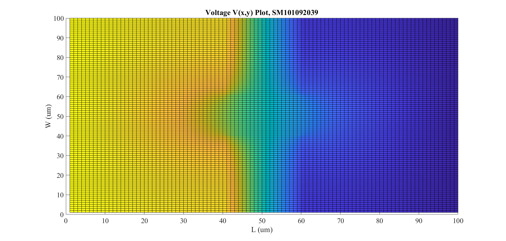
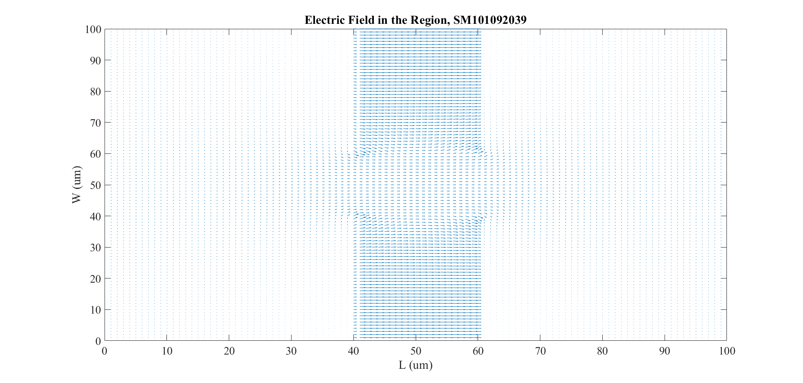
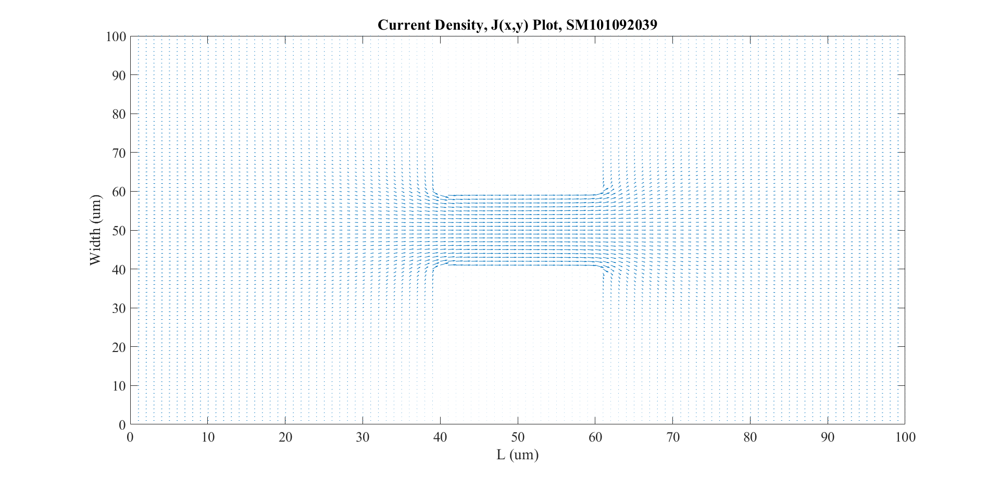
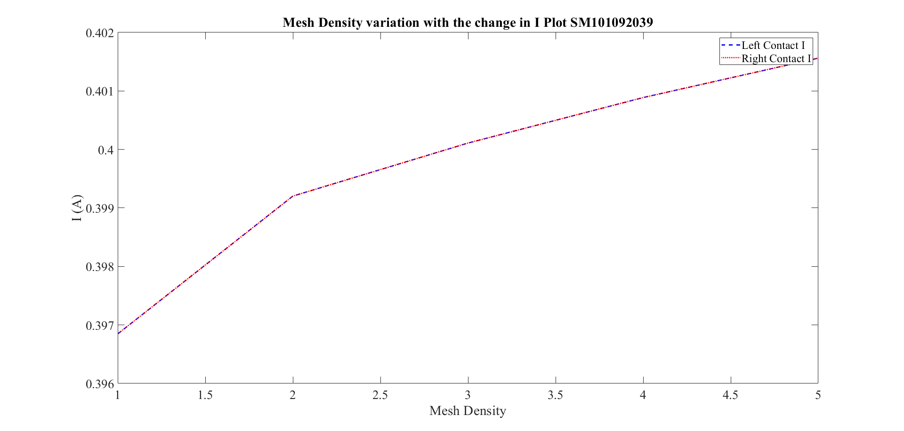
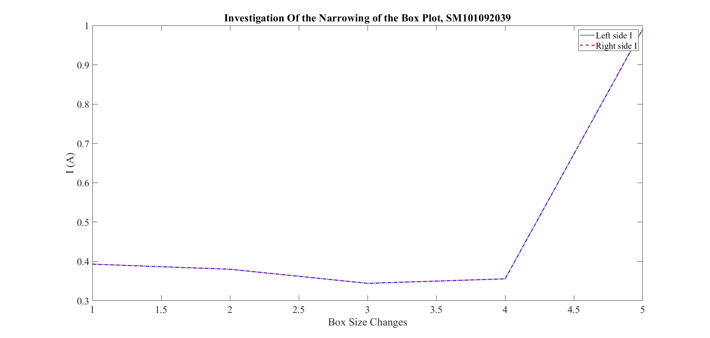
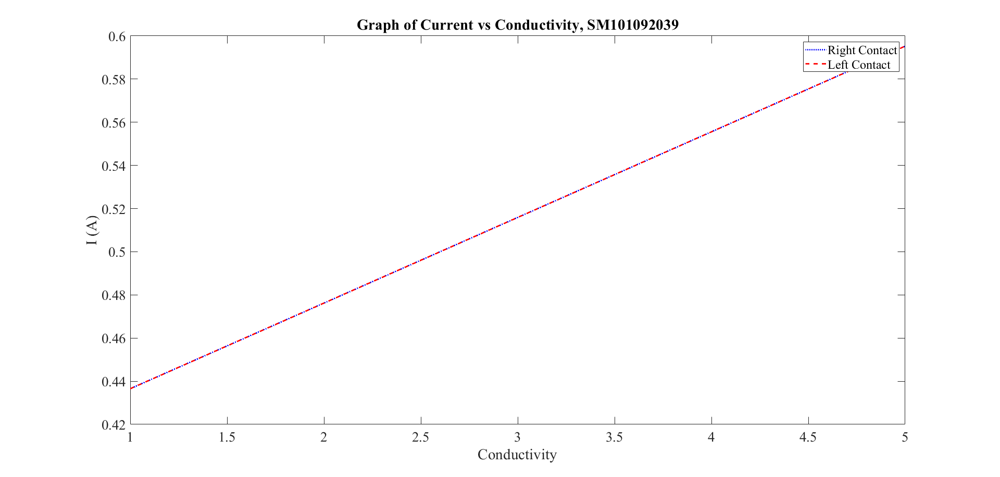

Part 2
Saifuddin Mohammed #101092039
Contents
2A)
set(0,'DefaultFigureWindowStyle','docked') set(0,'defaultaxesfontsize',20) set(0,'defaultaxesfontname','Times New Roman') set(0,'DefaultLineLineWidth',2); close all clear clc % Setting up Length and Width as per the ratio L/W L = 1; W = 1; V_0 = 1; %Assigning V0 a value of 1; nx = 100*L; ny = 100*W; W_BN = 0.4; %Width of the rectangle box L_BN = 0.4; %Length of the rectangle box sig_1 = 1; %Value of sigma outside the box sig_2 = 1e-2; %Value of sigma inside the box C = zeros(ny,nx); % Map of Conductivity for h = 1:ny for g = 1:nx %Assigning the values of sigma as per the location of the element if(g >= nx*W_BN && g <= nx-nx*W_BN && (h >= ny-ny*L_BN || h <= ny*L_BN)) % If inside the box, then sigma = 1e^-2 C(h,g) = sig_2; else %This is for outside the box. sigma = 1 C(h,g) = sig_1; end end end % Plot of conductivity of the region figure(4) surf(C) view(0,90) xlabel('L (um)') ylabel('W (um)') title({'Conductivity, sigma(x,y) of the Region, SM101092039'}) % Creating the G matrix and B vector for the GV = F solution G = sparse(nx*ny); F = zeros(nx*ny,1); for g = 1:nx for h = 1:ny %Mapping of the nodes equation n = h + (g - 1)*ny; %Local Mapping of the nodes around g and h nxm = h + (g - 2)*ny; nxp = h + g*ny; nym = (h - 1) + (g - 1)*ny; nyp = (h + 1) + (g - 1)*ny; if(g == 1 || g == nx) G(n,n) = 1; %Left Side Set Voltage elseif (h == 1) %Evalutation at the bottom region U_Y = (C(h,g)+C(h+1,g))/2; U_X = (C(h,g)+C(h,g+1))/2; UX_D = (C(h,g)+C(h,g-1))/2; G(n,n) = -(U_Y + U_X + UX_D); G(n,nyp) = U_Y; G(n,nxp) = U_X; G(n,nxm) = UX_D; % Evaluation at the top region elseif (h == ny) YDY_E = (C(h,g)+C(h-1,g))/2; UDX_E = (C(h,g)+C(h,g+1))/2; DDX_E = (C(h,g)+C(h,g-1))/2; G(n,n) = -(YDY_E + UDX_E + DDX_E); G(n,nym) = YDY_E; G(n,nxp) = UDX_E; G(n,nxm) = DDX_E; else %The finite difference method is being applied to evaluate the %regions potetntial outside the range as well. U_Y = (C(h,g)+C(h+1,g))/2; D_Y = (C(h,g)+C(h-1,g))/2; U_X = (C(h,g)+C(h,g+1))/2; UX_D = (C(h,g)+C(h,g-1))/2; G(n,n) = -(U_Y + D_Y + U_X + UX_D); G(n,nyp) = U_Y; G(n,nym) = D_Y; G(n,nxp) = U_X; G(n,nxm) = UX_D; end end end for g = 1:nx for h = 1:ny %Node Mapping Equation n = h + (g - 1)*ny; if (g == 1) %Indicating a shift towards left so the value must be set equal to V_0 F(n) = V_0; end end end % Utilizing GV = F to solve the equation V = G\F; for g = 1:nx for h = 1:ny % Node mapping to put entries into the correct place n = h + (g - 1)*ny; Vmap(h,g) = V(n); end end % Plotting the Voltage V across the region figure(5) surf(Vmap) view(0,90) xlabel('L (um)') ylabel('W (um)') title({'Voltage V(x,y) Plot, SM101092039'}) [E_x,E_y] = gradient(-Vmap); %Electric Field of the regions can be determined from using the gradient % Plotting the Electric Field over the region figure(6) quiver(E_x,E_y) view(0,90) xlabel('L (um)') ylabel('W (um)') title({'Electric Field in the Region, SM101092039'}) ylim([0,100]) xlim([0,100]) %The current density can be calculated from the Electric Field Potential J_dx = E_x.*C; J_dy = E_y.*C; % Generating a plot of Current Density, J across the region figure(7) quiver(J_dx,J_dy) view(0,90) xlabel('L (um)') ylabel('Width (um)') title({'Current Density, J(x,y) Plot, SM101092039'}) ylim([0,100]) xlim([0,100]) %Current Density on the Left side of the region is being determined J_L = sum(C(:,1).*E_x(:,1)); % Determination of Current Density on the Right side of the region J_R = sum(C(:,nx).*E_x(:,nx)); %Display the calculated current flow along the sides of the region. fprintf('Right side current flow is %f7 A.\n',J_R) fprintf('Left side current flow is %f7 A.\n',J_L)
Right side current flow is 0.3968477 A. Left side current flow is 0.3968477 A.   
2B) Investigate Mesh Densty
%Assigning the Mesh current rate flow CurrentL_M = J_L; CurrentR_M = J_R; % Creating variables for current versus box lengths/widths box_SL = J_L; % Assigning the current flow to the rectangular box parameters. box_SR = J_R; % Creating a vector for when the conductivity is incremented. Right_IncCC = J_R; LEFT_IncCC = J_L; for num_Iter = 2:5 %Ajusting the elements of the matrix with the Length and the multiplying factor nx = 100*L*(1+(0.1*num_Iter)); %Adjusting the elements of the matrix with the width and the multiplying factor ny = 100*W*(1+(0.1*num_Iter)); % Setting up the G matrix using sparse G = sparse(nx*ny,nx*ny); % Setting up the F matrix for GV = F F = zeros(nx*ny,1); C = zeros(ny,nx); %Map of Conductivity for h = 1:ny %Assigning the values of sigma as per the location of the element for g = 1:nx if(g >= nx*W_BN && g <= nx-nx*W_BN && (h >= ny-ny*L_BN || h <= ny*L_BN)) % If inside the box, then sigma = 1e^-2 C(h,g) = sig_2; else %This is for outside the box. sigma = 1 C(h,g) = sig_1; end end end for g = 1:nx % Elements allocation of the G Matrix for h = 1:ny % Node mapping equation n = h + (g - 1)*ny; %Local Mapping of the nodes around g and h nxm = h + (g - 2)*ny; nxp = h + g*ny; nym = (h - 1) + (g - 1)*ny; nyp = (h + 1) + (g - 1)*ny; if(g == 1 || g == nx) G(n,n) = 1; elseif (h == ny) %Evaluation at the Top Region D_Y = (C(h,g)+C(h-1,g))/2; U_X = (C(h,g)+C(h,g+1))/2; UX_D = (C(h,g)+C(h,g-1))/2; G(n,n) = -(D_Y + U_X + UX_D); G(n,nym) = D_Y; G(n,nxp) = U_X; G(n,nxm) = UX_D; elseif (h == 1) %Evaluation of Bottom Region U_Y = (C(h,g)+C(h+1,g))/2; U_X = (C(h,g)+C(h,g+1))/2; UX_D = (C(h,g)+C(h,g-1))/2; G(n,n) = -(U_Y + U_X + UX_D); G(n,nyp) = U_Y; G(n,nxp) = U_X; G(n,nxm) = UX_D; else %The finite difference method is being applied to evaluate the %regions potetntials outside as well. U_Y = (C(h,g)+C(h+1,g))/2; D_Y = (C(h,g)+C(h-1,g))/2; U_X = (C(h,g)+C(h,g+1))/2; UX_D = (C(h,g)+C(h,g-1))/2; G(n,n) = -(U_Y + D_Y + U_X + UX_D); G(n,nyp) = U_Y; G(n,nym) = D_Y; G(n,nxp) = U_X; G(n,nxm) = UX_D; end end end for g = 1:nx for h = 1:ny %Node Mapping Equation put entries into right locations n = h + (g - 1)*ny; if (g == 1) F(n) = V_0; %Indicating a shift towards left so the value must be set equal to V_0 end end end %Utilizing the relationship GV = F to solve for equation V = G\F; for g = 1:nx for h = 1:ny % Node mapping to put entries into the correct place n = h + (g - 1)*ny; Vmap(h,g) = V(n); end end [E_x,E_y] = gradient(-Vmap); %The electric field can be calculated from the gradient same as the previous part. % Calculating the current flow in the different locations and % directions and storing CurrentL_M(num_Iter) = sum(C(:,1).*E_x(:,1)); CurrentR_M(num_Iter) = sum(C(:,nx).*E_x(:,nx)); end %Plotting the variation of the Mesh Density with respect to the flow of %current through the region figure(8) plot(linspace(1,5,5),CurrentL_M,'b--') hold on plot(linspace(1,5,5),CurrentR_M,'r:') set(gca,'Color', [0 0 0]); a_x = gca; a_x.GridAlpha = 0.5; a_x.GridColor = [1, 1, 1]; hold off xlabel('Mesh Density') ylabel({'I (A)'}) title({'Mesh Density variation with the change in I Plot SM101092039'}) lg = legend('Left Contact I','Right Contact I') color = lg.TextColor; lg.TextColor = 'white';
lg =
Legend (Left Contact I, Right Contact I) with properties:
String: {'Left Contact I' 'Right Contact I'}
Location: 'northeast'
Orientation: 'vertical'
FontSize: 18
Position: [0.5310 0.7401 0.3554 0.1393]
Units: 'normalized'
Use GET to show all properties
 2C) Investigate narrowing of the bottle neck
% Setting the Length and Width paramters of the rectangular region %Utilizng the Length and width to configure the elements ranges nx = 100*L; ny = 100*W; for num_Iter = 1:5 C = zeros(ny,nx); % Map of Conductivity W_BN = 0.4*(1+(num_Iter/20)); % Adjusting the Width of the bottle neck boxes with the iteration factor L_BN = 0.4*(1+(num_Iter/20)); % Adjusting the Length of the bottle neck boxes with the iteration factor for h = 1:ny % Adjusting the sigma value for the elements based on the location for g = 1:nx if(g >= nx*W_BN && g <= nx-nx*W_BN && (h >= ny-ny*L_BN || h <= ny*L_BN)) % If Inside the box then sigma = 10e-2 C(h,g) = sig_2; else % If outside the box, sigma = 1 C(h,g) = sig_1; end end end % Initialize and create the G matrix G = sparse(nx*ny,nx*ny); %Initialize and create G Matrix F = zeros(nx*ny,1); for g = 1:nx for h = 1:ny n = h + (g - 1)*ny; % Node mapping equation % Local Mapping of Nodes around g and h nxm = h + (g - 2)*ny; nxp = h + g*ny; nym = (h - 1) + (g - 1)*ny; nyp = (h + 1) + (g - 1)*ny; if(g == 1 || g == nx) G(n,n) = 1; %Evaluation at the bottom region elseif (h == 1) U_Y = (C(h,g)+C(h+1,g))/2; U_X = (C(h,g)+C(h,g+1))/2; UX_D = (C(h,g)+C(h,g-1))/2; G(n,n) = -(U_Y + U_X + UX_D); G(n,nyp) = U_Y; G(n,nxp) = U_X; G(n,nxm) = UX_D; %Evaluation at the top region elseif (h == ny) D_Y = (C(h,g)+C(h-1,g))/2; U_X = (C(h,g)+C(h,g+1))/2; UX_D = (C(h,g)+C(h,g-1))/2; G(n,n) = -(D_Y + U_X + UX_D); G(n,nym) = D_Y; G(n,nxp) = U_X; G(n,nxm) = UX_D; %The finite difference method is being applied to evaluate the %regions potetntials outside as well. else U_Y = (C(h,g)+C(h+1,g))/2; D_Y = (C(h,g)+C(h-1,g))/2; U_X = (C(h,g)+C(h,g+1))/2; UX_D = (C(h,g)+C(h,g-1))/2; G(n,n) = -(U_Y + D_Y + U_X + UX_D); G(n,nyp) = U_Y; G(n,nym) = D_Y; G(n,nxp) = U_X; G(n,nxm) = UX_D; end end end for g = 1:nx for h = 1:ny n = h + (g - 1)*ny; %Node Mapping Equation if (g == 1) %Indicating a shift towards left so the value must be set equal to V_0 F(n) = V_0; end end end %Utilizing the relationship GV = F to solve for equation V = G\F; %Initliazing Vmap to 0 for setting up the matrix Vmap = 0; for g = 1:nx for h = 1:ny % Node mapping equation n = h + (g - 1)*ny; %Calculating the Gradient of V Vmap(h,g) = V(n); end end [E_x,E_y] = gradient(-Vmap); %The electric field can be calculated from the gradient same as the previous part. % Calculating the current flow in the different locations and % directions and examining the variation with respect to the boxes. box_SL(num_Iter) = sum(C(:,1).*E_x(:,1)); box_SR(num_Iter) = sum(C(:,nx).*E_x(:,nx)); end % Plotting the Variation of Current with respect to the changes in the % dimension of the boxes figure(9) plot(linspace(1,5,5),box_SR,'b:') hold on plot(linspace(1,5,5),box_SL,'r--') plot(linspace(1,5,5),box_SR,'b:') set(gca,'Color', [0 0 0]); a_x = gca; a_x.GridAlpha = 0.5; a_x.GridColor = [1, 1, 1]; hold off title({'Investigation Of the Narrowing of the Box Plot, SM101092039'}) xlabel('Box Size Changes') ylabel({'I (A)'}) lg = legend('Left side I','Right side I') color = lg.TextColor; lg.TextColor = 'white';
lg =
Legend (Left side I, Right side I) with properties:
String: {'Left side I' 'Right side I'}
Location: 'northeast'
Orientation: 'vertical'
FontSize: 18
Position: [0.5952 0.7401 0.2911 0.1393]
Units: 'normalized'
Use GET to show all properties
 2D)Investigate the varying conductivity of the Box
for num_Iter = 1:5 %Configuring the elements of the matrix with respect to the Length and %multiplying factor nx = 100*L; %Configuring the elements of the matrix with respect to the width and %multiplying factor ny = 100*W; C = zeros(ny,nx); % Map of Conduction will be utlized for analyzing the conductivity L_BN = 0.4; % Setting the length of the rectangle boxes W_BN = 0.4; % Setting the length of the rectangle boxes for h = 1:ny %Assigning the values of sigma as per the location of the element for g = 1:nx if(g >= nx*W_BN && g <= nx-nx*W_BN && (h >= ny-ny*L_BN || h <= ny*L_BN)) C(h,g) = sig_2; % If Inside the box then sigma = 10e-2 else % If outside the box, then sigma =1 C(h,g) = sig_1; end end end G = sparse(nx*ny,nx*ny); F = zeros(nx*ny,1); C = C*(1+(0.1*num_Iter)); % The size of the matrix of conductivity is being incremented in order for more allocation of more number of elements for g = 1:nx for h = 1:ny %Node Mapping equation n = h + (g - 1)*ny; %Local Mapping of the nodes around g and h nxm = h + (g - 2)*ny; nxp = h + g*ny; nym = (h - 1) + (g - 1)*ny; nyp = (h + 1) + (g - 1)*ny; if(g == 1 || g == nx) % Set voltage on the sides G(n,n) = 1; % Evaluation at the top elseif (h == ny) D_Y = (C(h,g)+C(h-1,g))/2; U_X = (C(h,g)+C(h,g+1))/2; UX_D = (C(h,g)+C(h,g-1))/2; G(n,n) = -(D_Y + U_X + UX_D); G(n,nym) = D_Y; G(n,nxp) = U_X; G(n,nxm) = UX_D; % Evaluation at the bottom elseif (h == 1) U_Y = (C(h,g)+C(h+1,g))/2; U_X = (C(h,g)+C(h,g+1))/2; UX_D = (C(h,g)+C(h,g-1))/2; G(n,n) = -(U_Y + U_X + UX_D); G(n,nyp) = U_Y; G(n,nxp) = U_X; G(n,nxm) = UX_D; else %The finite difference method is being applied to evaluate the %regions potetntials outside as well. U_Y = (C(h,g)+C(h+1,g))/2; D_Y = (C(h,g)+C(h-1,g))/2; U_X = (C(h,g)+C(h,g+1))/2; UX_D = (C(h,g)+C(h,g-1))/2; G(n,n) = -(U_Y + D_Y + U_X + UX_D); G(n,nyp) = U_Y; G(n,nym) = D_Y; G(n,nxp) = U_X; G(n,nxm) = UX_D; end end end for g = 1:nx for h = 1:ny % Node mapping equation n = h + (g - 1)*ny; if (g == 1) F(n) = V_0; %Indicating if a shift towards left so the value must be set equal to V_0 end end end % Utilizng the relationship GV = F V = G\F; %Initliazing Vmap to 0 for setting up the matrix Vmap = 0; for g = 1:nx for h = 1:ny % Node mapping to put entries into the correct place n = h + (g - 1)*ny; Vmap(h,g) = V(n); end end [E_x,E_y] = gradient(-Vmap); %The electric field can be calculated from the gradient same as the previous part. % Calculating the current flow in the different locations and % directions and examining the variation with respect to the % conductivity. Right_IncCC(num_Iter) = sum(C(:,nx).*E_x(:,nx)); LEFT_IncCC(num_Iter) = sum(C(:,1).*E_x(:,1)); end % Plotting the Variation of Current with respect to the conductin of the % region figure(10) plot(linspace(1,5,5),LEFT_IncCC,'b:') hold on plot(linspace(1,5,5),Right_IncCC,'r--') set(gca,'Color', [0 0 0]); a_x = gca; a_x.GridAlpha = 0.5; a_x.GridColor = [1, 1, 1]; hold off title({'Graph of Current vs Conductivity, SM101092039'}) xlabel('Conductivity') ylabel({'I (A)'}) lg = legend('Right Contact' , 'Left Contact') color = lg.TextColor; lg.TextColor = 'white';
lg =
Legend (Right Contact, Left Contact) with properties:
String: {'Right Contact' 'Left Contact'}
Location: 'northeast'
Orientation: 'vertical'
FontSize: 18
Position: [0.5560 0.7401 0.3304 0.1393]
Units: 'normalized'
Use GET to show all properties
